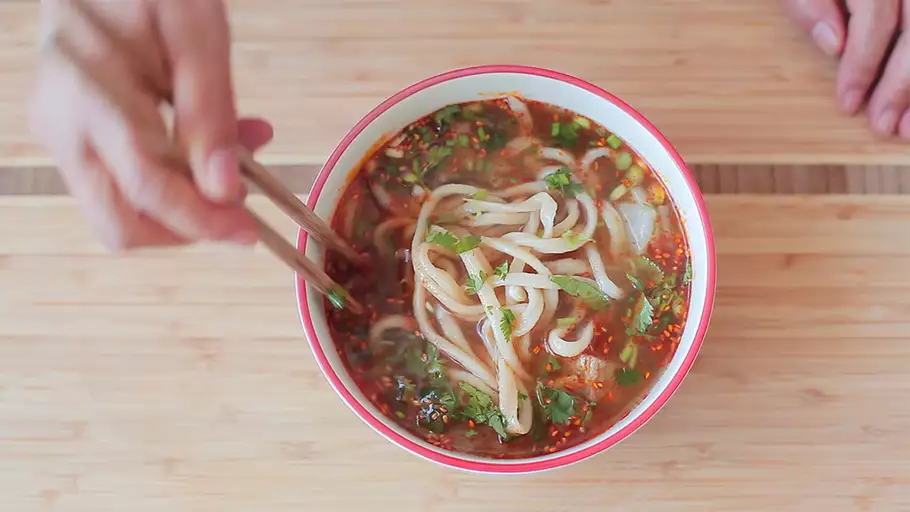

La Mian (Chinese Hand Pulled Noodes)

Serve this traditional meal in hot broth for a delicious and warming meal.
Ingredients
- 8 cups all-purpose flour
- 2 ½ cups water
- ¼ cup vegetable oil
Steps
- Place flour in a large bowl and gradually mix in water. Mix until dough comes together; knead until smooth, 15 to 20 minutes. Cover with plastic wrap and let rest for 15 minutes.
- Knead dough again for 2 minutes; cover and let rest for 15 minutes.
- Knead dough one more time for 2 minutes. Divide into 4 equal pieces. Roll each piece into a 3/8-inch-thick sheet. Brush both sides of each sheet with oil. Stack sheet together; cover with plastic wrap and let rest for 10 to 15 minutes.
- Fill a large saucepan with water and bring to boil.
- Place one sheet of dough on a cutting board and slice into 1/8-inch-wide strips. Take one end of a strip in each hand and stretch it until it is 30 to 35-inches long. Fold it in thirds and stretch again to the same length; shake and slap against the counter several times to lengthen it to 2 to 3 yards. Drop it into boiling water. Add 2 to 3 more strips of noodles to boiling water; cook until tender, 5 to 10 minutes. Transfer drained noodles to a serving bowl.
- Repeat with remaining sheets of dough.
Return